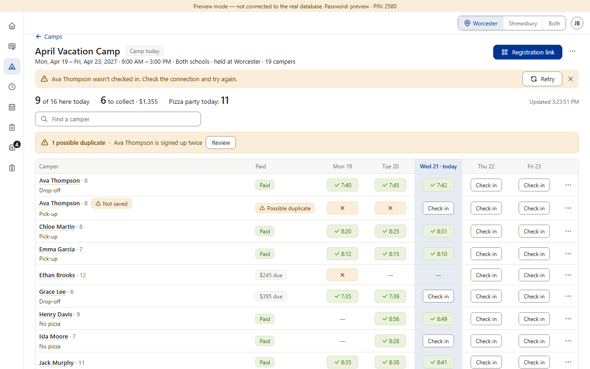
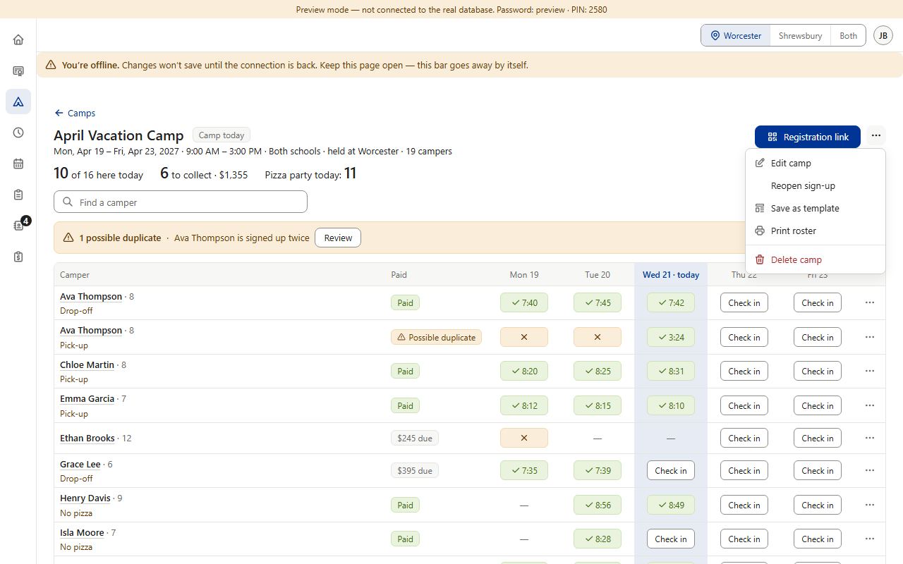
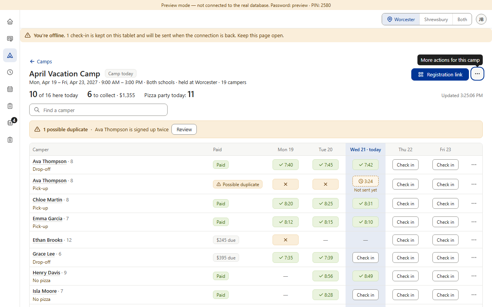

Missing — not planned. Rule §3.5 promises: “Check-ins made offline are queued and sent when the connection returns; nothing is discarded.” No section does this — Camps' roster and Prospects' / Calendar's “Came?” need the connection. Item 5b already decided the offline bar (its words stop promising “will sync”). Today a check-in that can't save fails honestly, but nothing is kept on the tablet. Precedent: for grading you chose a printed sheet over an offline queue (v0.188); Camps already has Print roster. (Preview screenshots at PC size · fake data; the preview's date moved into April Vacation Camp week to show Check in)


